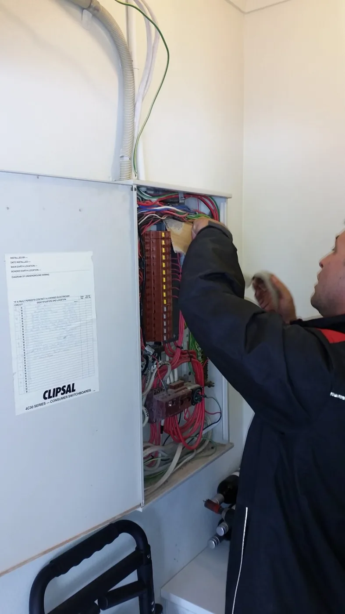

Problem solving first
Find the cause. Not just the symptom.
Electrical problems aren't always what they first appear to be. We investigate, test where needed and identify the most practical way forward rather than replacing parts unnecessarily.
With over 26 years in the electrical trade, Berryman Electrical brings practical experience, clear thinking and a problem-solving approach to every job.
From industrial equipment faults and commercial maintenance to residential repairs and upgrades, the aim is simple: understand the problem, find the right solution and get the work done properly.
Find the cause. Not just the symptom.
Electrical problems aren't always what they first appear to be. We investigate, test where needed and identify the most practical way forward rather than replacing parts unnecessarily.
Clear answers. Practical solutions.
We explain what we've found, what needs attention and what your options are — so you can make informed decisions without unnecessary jargon.
Based in Byron Bay. Working across the Northern Rivers.
From everyday installations to equipment faults, controls and switchboards, we work across commercial, industrial and residential environments.
Our service pages include genuine Berryman Electrical photographs — switchboards, control equipment, electrical testing, fault investigations and installations.
They offer a closer look at the hands-on experience behind the business.
See actual electrical work
Hands-on experience in fault finding, maintenance and installations.
Practical electrical work for buildings, equipment and homes.
Serving nearby Northern Rivers towns and hinterland communities.
Licensed electrical contracting services.
Whether it's an electrical fault, commercial maintenance, industrial equipment or a planned installation, let's discuss the next sensible step.